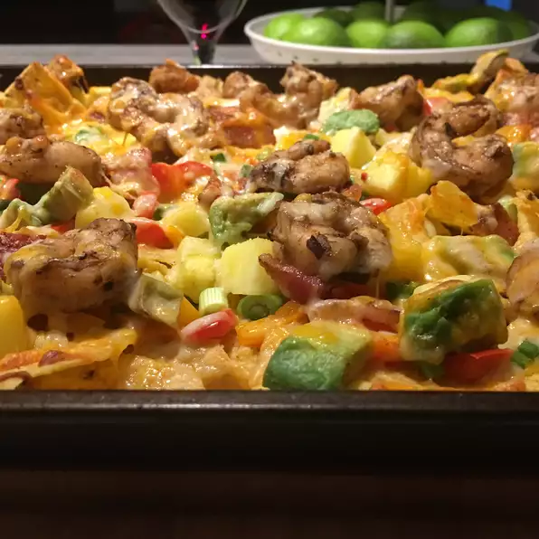

Caribbean Nachos

Description:
This recipe combines spicy, sweet, and salty with a definite Caribbean flair. The multigrain chips make it a heartier and healthier dish, and add a wonderful nutty flavor. Chicken can be subbed for the shrimp, but increase the cooking time as necessary. Serve with sour cream and picante salsa.
Per Serving: 1268 calories; protein 59g; carbohydrates 108.4g; fat 68.9g; cholesterol 299.4mg; sodium 2808.9mg.
Ingredients:
- 1 (16 ounce) package multigrain tortilla chips
- 1 red bell pepper, diced
- 1 orange bell pepper, diced
- 1 bunch green onions, chopped
- 1 avocado - peeled, pitted, and diced
- ½ pineapple, peeled and cut into 1/2-inch dice
- 8 thick slices bacon
- ¾ cup Caribbean jerk marinade
- 1 pound cooked shrimp, peeled and deveined
- ½ pound shredded Monterey Jack cheese
- 1 bunch fresh cilantro, chopped
Steps:
- Preheat oven to 400 degrees F (200 degrees C).
- Layer the chips on a tray or cookie sheet. Arrange the red pepper, orange pepper, onion, avocado, and pineapple on top of the chips.
- Place bacon in a large, deep skillet. Cook over medium-high heat until evenly crisp; drain on a plate lined with paper towels. Chop the bacon and sprinkle over the nachos.
- Pour the jerk marinade into a saucepan over medium heat. Cook, stirring continually, until the marinade reduces to a thick sticky consistency, about 3 minutes. Add the shrimp and stir to coat; cook until the shrimp are hot. Scatter the shrimp over the nachos; top with Monterrey Jack cheese and cilantro.
- Place the nachos in the oven until the cheese is melted, about 7 minutes.